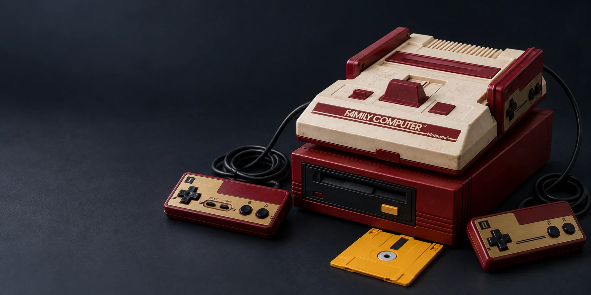

YOUR CARTRIDGE
読み込んだデータ
- 状態
- 未読込
1983 — PLAY IT AGAIN
カセットを選んで、電源を入れる。
ここは、あなたのファミコンルーム。

矢印キー：移動 · Z：B · X：A · Enter：START · Shift：SELECT
タッチ操作・ゲームパッド対応。設定・セーブ／ロードはゲーム画面内のメニューから。
YOUR CARTRIDGE
DISK & SAVE
FDSはディスクデータに加え、手元の8 KB BIOSを選択して起動します。ディスク面は右側の選択欄から切り替えられます。
セーブデータ・ステートの保存と読込は画面内メニューから。大切なデータはファイルに書き出してください。
COMPATIBILITY
iNES・NES 2.0・UNIF・FDSを読み込み、FCEUmm / Nestopiaで実行します。動かない場合は別コアを選んで再起動してください。
特殊な基板・周辺機器・不正なROMデータなど、全タイトルの完全動作は保証していません。